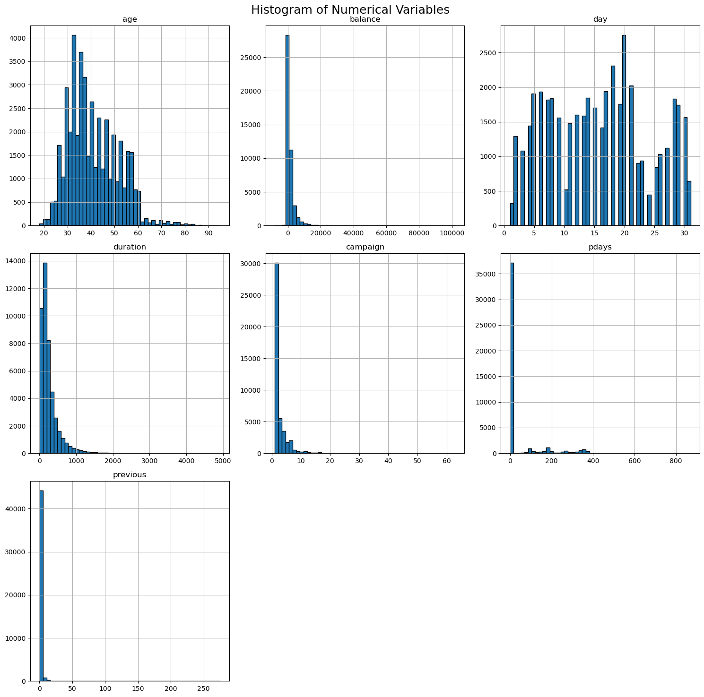
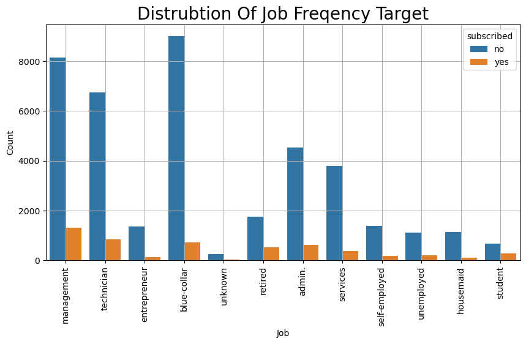
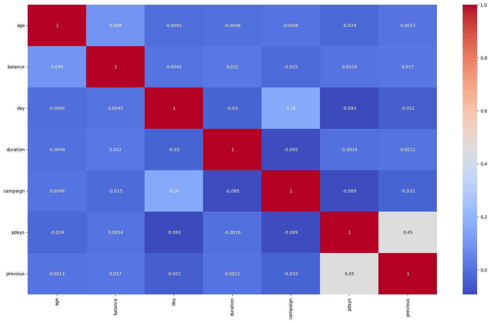
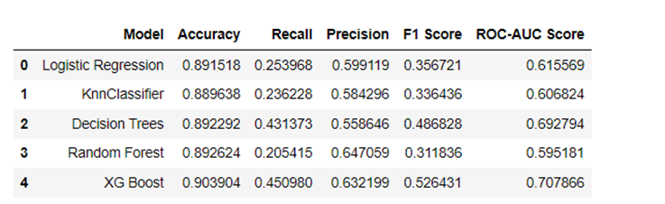
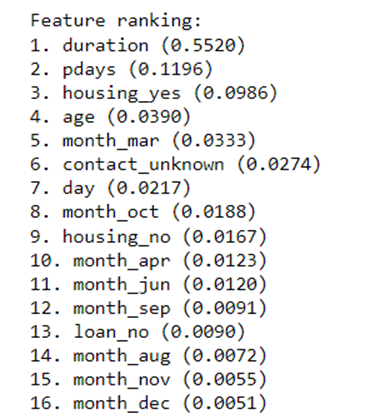

Machine
Learning, Bank Client Subscription Prediction
Enhancing Customer Conversion and Engagement through Data-Driven Insights
In this project, we developed a predictive model in Python using data from direct marketing campaigns conducted by a Portuguese banking institution. By analyzing historical data from phone calls, our model aims to accurately forecast whether a client will subscribe to a term deposit. This predictive capability allows for a more targeted marketing approach, increasing efficiency and effectiveness in customer outreach.
The model identifies key factors influencing client decisions, enabling the bank to tailor its marketing strategies.
By focusing on high-potential clients, the bank can optimize resource allocation, reducing costs associated with ineffective marketing efforts.
Increased Subscription Rates
Insights derived from the model help in understanding customer behavior and preferences, leading to higher subscription rates for term deposits.
Personalized marketing messages based on model predictions enhance client engagement and conversion rates.
Enhanced Customer Experience
By predicting client needs and preferences more accurately, the bank can offer more relevant and timely products, improving overall customer satisfaction.
Targeted campaigns reduce the frequency of unwanted calls, enhancing the client experience.
ANALYSIS OVERVIEW
Our analyses included Data preprocessing, Exploratory Data Analysis, Feature engineering, Model selection, and Performance evaluation.
To make sure the model works well, its performance was assessed using several measures, including accuracy, precision, recall, F1-score, and ROC-AUC.
Since we are dealing with binary response variables, I used the below ML models:
Logistic Regression KNN Decision Tree Random Forest Gradient Boosting Machines (e.g., XGBoost)
Further, I performed hyperparameter tuning to optimize our models.
And finally gave actionable business implications from this analysis.
Exploratory Data Analysis
Most customers seem to be from the 30 -
45 age group.
The Age distribution highlights the need
to adjust marketing tactics to appeal to middle-aged consumers.
This distribution implies that a
significant percentage of calls are of a considerable length.
Majority of the job categories don’t
subscribe to the term deposits; however, this imbalance is greater in
management jobs, technicians and blue-collar jobs while it is lower in retired
clients and students.
No strong linear correlation between any 2 variables.



Model Building
Models were built after train-test split, scaling and encoding the required variables.
Performed hyperparameter tuning with
gridsearch and randomsearch.
Used Randomsearch to run the models quicker for
models with large hyperparameters.
Build the ROC-Curve to check for
classification robustness as well.
Checked for accuracy, recall,
precision and F1 scores.
Best hyperparameters selected in
grid search/random
search were based on best accuracy.
The ROC curve is a graphical representation that illustrates the diagnostic ability of a binary classifier system as its discrimination threshold is varied.
2 out of 5 model outputs shown with thier ROC-Curves. Check my Github page for to see other models.
Evaluating the model performance
Each model has advantages and
disadvantages, but XG boost performs the best over all other models overall.
In a marketing effort when identifying
potential clients is crucial, XG BOOST model may be more desired as it is better at catching potential subscribers.
XG Boost's ROC-AUC score of 0.70 suggests
that the model does a good job of differentiating between the positive and
negative classes.
Random Forest has an accuracy
of 89.2% and a highest precision among all the models but a lower ROC score than XG boost
Since XG boost is also good at handling imbalances in data,
this would be the best model for this analyses to draw our conclusions from.

What
are the key factors influencing a client's decision to subscribe to a term
deposit, and how can we optimize our marketing strategies to increase the
subscription rate based on these insights?

The top 3 most important features that
influence a client's decision to a term deposits per decision trees are Call
Duration , the number of days that passed after the client was last contacted
from a previous (pdays) and whether the client has housing loan
The most important feature according to
your model is the duration of the last contact in seconds. Longer conversations
with clients appear to have a significant influence on the decision to
subscribe to a term deposit.
These feature importance scores help us
understand which aspects of our data are most predictive of subscription
decisions. We can use this information to focus on the most influential
features when designing marketing campaigns or making business decisions.
Focus marketing efforts on clients with
attributes that are highly ranked in feature importance
Use client segmentation to tailor
marketing messages. For example, create different marketing strategies for
younger clients and older clients based on the "Age" feature.
Recommendations for the bank
If the bank wants to ensure they reach as
many potential subscribers as
possible (even at the risk of targeting some
who won't subscribe), they might prioritize models with high Recall.
If the bank wants to ensure that their
marketing or outreach efforts are more precise
and cost-effective (targeting only those most likely to subscribe), they might prioritize Precision (like
in Random Forest).
XG Boost appears to be the best-balanced
model with the highest accuracy, and decent Recall and Precision. This might be
the bank's best option for a well-rounded approach.
The bank should also consider the costs
associated with false positives (clients incorrectly predicted to subscribe)
and false negatives (potential subscribers the model misses). Balancing these
costs will help in choosing the most economically beneficial model.
The particular
objectives of bank's marketing strategy
should guide their decision when selecting one of these models. It seems like
XG Boost is a superior option if getting more subscribers is their top
priority.
Recommendation would be to use XG
boost model as the F1 score of 52.6% is balancing the costs and a descent ROC
score suggests a robust classification.